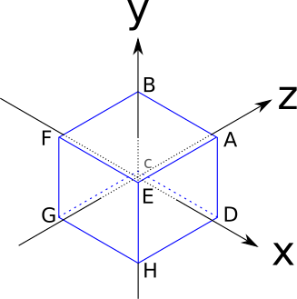
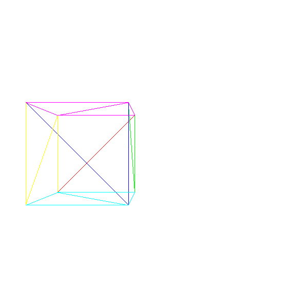
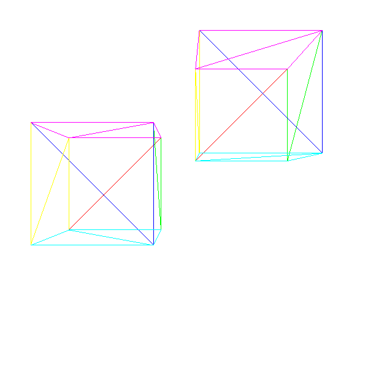
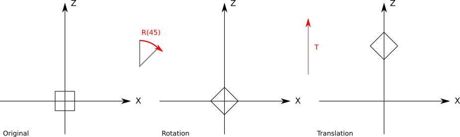
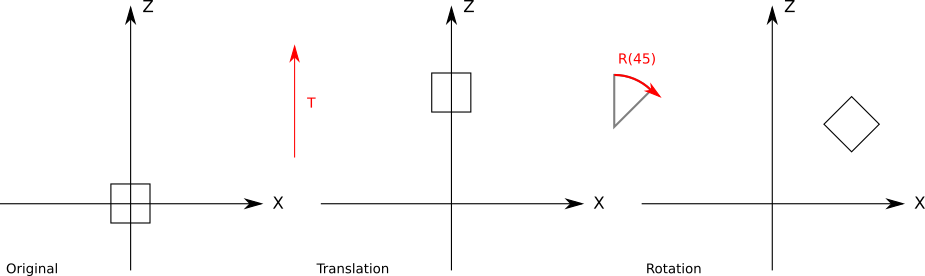
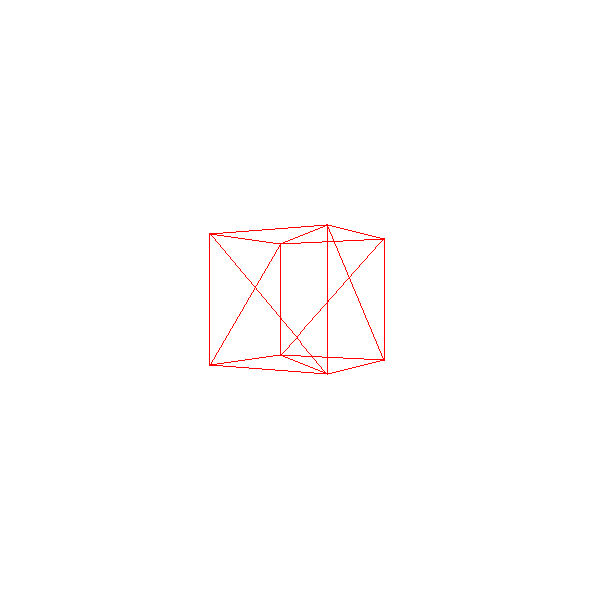
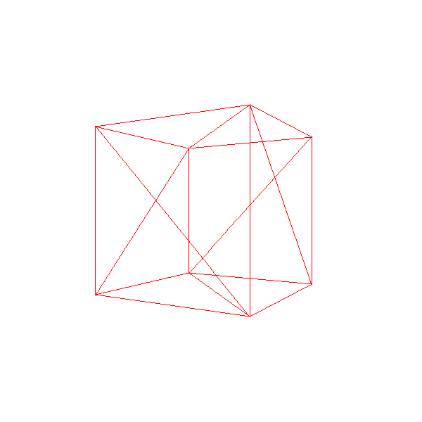
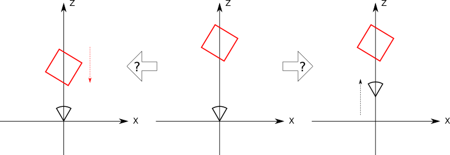
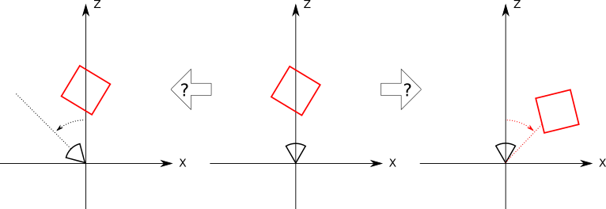
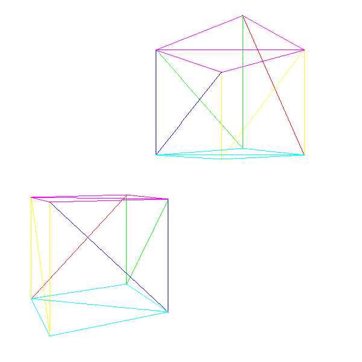

Describing and Rendering a Scene
In the last few chapters, we’ve developed algorithms to draw 2D triangles on the canvas given their 2D coordinates, and we’ve explored the math required to transform the 3D coordinates of points in the scene to the 2D coordinates of points on the canvas.
At the end of the previous chapter, we cobbled together a program that used both to render a 3D cube on the 2D canvas. In this chapter, we’ll formalize and extend that work with the goal of rendering a whole scene containing an arbitrary number of objects.
Representing a Cube
Let’s think again about how to represent and manipulate a cube, this time with the goal of finding a more general approach. The edges of our cube are 2 units long and are parallel to the coordinate axes, and it’s centered on the origin, as shown in Figure 10-1.

These are the coordinates of its vertices:
\(A = (1, 1, 1)\)
\(B = (-1, 1, 1)\)
\(C = (-1, -1, 1)\)
\(D = (1, -1, 1)\)
\(E = (1, 1, -1)\)
\(F = (-1, 1, -1)\)
\(G = (-1, -1, -1)\)
\(H = (1, -1, -1)\)
The sides of the cube are square, but the algorithms we have developed work with triangles. One of the reasons we chose triangles in the first place is that any other polygon, including squares, can be decomposed into triangles. So we’ll represent each square side of the cube using two triangles.
However, we can’t take any three vertices of the cube and expect them to describe a triangle on its surface (for example, ADG is inside the cube). This means that the vertex coordinates, by themselves, don’t fully describe the cube: we also need to know which sets of three vertices describe the triangles that make up its sides.
Here’s a possible list of triangles for our cube:
A, B, C A, C, D E, A, D E, D, H F, E, H F, H, G B, F, G B, G, C E, F, B E, B, A C, G, H C, H, D
This suggests a generic structure we can use to represent any object made of triangles: a Vertices list, holding the coordinates of each vertex; and a Triangles list, specifying which sets of three vertices describe triangles on the surface of the object.
Each entry in the Triangles list may include additional information besides the vertices that make it up; for example, this would be the perfect place to specify the color of each triangle.
Since the most natural way to store this information is in two lists, we’ll use list indices to refer to the vertices in the vertex list. So our cube would be represented like this:
Vertices 0 = ( 1, 1, 1) 1 = (-1, 1, 1) 2 = (-1, -1, 1) 3 = ( 1, -1, 1) 4 = ( 1, 1, -1) 5 = (-1, 1, -1) 6 = (-1, -1, -1) 7 = ( 1, -1, -1) Triangles 0 = 0, 1, 2, red 1 = 0, 2, 3, red 2 = 4, 0, 3, green 3 = 4, 3, 7, green 4 = 5, 4, 7, blue 5 = 5, 7, 6, blue 6 = 1, 5, 6, yellow 7 = 1, 6, 2, yellow 8 = 4, 5, 1, purple 9 = 4, 1, 0, purple 10 = 2, 6, 7, cyan 11 = 2, 7, 3, cyan
Rendering an object with this representation is quite simple: we first project every vertex, storing them in a temporary projected vertices list (since each vertex is used an average of four times, this avoids a lot of repeated work); then we go through the triangle list, rendering each individual triangle. A first approximation would look like this:
RenderObject(vertices, triangles) {
projected = []
for V in vertices {
projected.append(ProjectVertex(V))
}
for T in triangles {
RenderTriangle(T, projected)
}
}
RenderTriangle(triangle, projected) {
DrawWireframeTriangle(projected[triangle.v[0]],
projected[triangle.v[1]],
projected[triangle.v[2]],
triangle.color)
}We can go ahead and apply this directly to the cube as defined above, but the results won’t look good. This is because some of its vertices are behind the camera, which, as we discussed in the previous chapter, is a recipe for weird things. And if you look at the vertex coordinates and Figure 10-1, you’ll notice the coordinate origin, the position of our camera, is inside the cube.
To work around this problem, we’ll just move the cube. To do this, we need to move each vertex of the cube in the same direction. Let’s call this direction \(\vec{T}\), for “translation.” We’ll translate the cube 7 units forward to make sure it’s completely in front of the camera. We’ll also translate it 1.5 units to the left to make it look more interesting. Since “forward” is the direction of \(\vec{Z_+}\) and “left” is \(\vec{X-}\), the translation vector is simply
\[\vec{T} = \begin{pmatrix} -1.5 \\ 0 \\ 7 \end{pmatrix}\]
To compute the translated version \(V\, '\) of each vertex \(V\) in the cube, we just need to add the translation vector to it:
\[V\, ' = V + \vec{T}\]
At this point, we can take the cube, translate each vertex, and then apply the algorithm in Listing 10-1 to get our first 3D cube (Figure 10-2).

Models and Instances
What if we want to render two cubes? A naive approach would be to create a new set of vertices and triangles describing a second cube. This would work, but it would waste a lot of memory. What if we wanted to render one million cubes?
A better approach is to think in terms of models and instances. A model is a set of vertices and triangles that describes a certain object in a generic way (think “a cube has eight vertices and six sides”). An instance of a model, on the other hand, describes a concrete occurrence of that model within the scene (think “there’s a cube at (0, 0, 5)”).
How do we apply this idea in practice? We can have a single description of each unique object in the scene and then place multiple copies of it by specifying their coordinates. Informally, it would be like saying, “This is what a cube looks like, and there’s cubes here, here and there.”
This is a rough approximation of how we’d describe a scene using this approach:
model {
name = cube
vertices {
...
}
triangles {
...
}
}
instance {
model = cube
position = (-1.5, 0, 7)
}
instance {
model = cube
position = (1.25, 2, 7.5)
}
In order to render this, we just go through the list of instances; for each instance, we make a copy of the model’s vertices, translate them according to the position of the instance, and then render them as before (Listing 10-2):
RenderScene() {
for I in scene.instances {
RenderInstance(I);
}
}
RenderInstance(instance) {
projected = []
model = instance.model
for V in model.vertices {
V' = V + instance.position
projected.append(ProjectVertex(V'))
}
for T in model.triangles {
RenderTriangle(T, projected)
}
}If we want this to work as expected, the coordinates of the vertices on the model should be defined in a coordinate system that “makes sense” for the object; we’ll call this coordinate system model space. For example, we defined our cube such that its center was (0, 0, 0); this means that when we say “a cube located at (1, 2, 3),” we mean “a cube centered around (1, 2, 3).”
After applying the instance translation to the vertices defined in model space, the transformed vertices are now expressed in the coordinate system of the scene; we’ll call this coordinate system world space.
There are no hard and fast rules to define a model space; it depends on the needs of your application. For example, if you have the model of a person, it might be sensible to place the origin of the coordinate system at their feet.
Figure 10-3 shows a simple scene with two instances of our cube.

Model Transform
The scene definition we described above doesn’t give us a lot of flexibility. Since we can only specify the position of a cube, we could instantiate as many cubes as we wanted, but they would all be facing the same direction. In general, we want to have more control over the instances: we also want to specify their orientation and possibly their scale.
Conceptually, we can define a model transform with these three elements: a scaling factor, a rotation around the origin in model space, and a translation to a specific point in the scene:
instance {
model = cube
transform {
scale = 1.5
rotation = <45 degrees around the Y axis>
translation = (1, 2, 3)
}
}
We can extend the algorithm in Listing 10-2 to accommodate the new transforms. However, the order in which we apply the transforms is important; in particular, the translation must be done last. This is because most of the time we want to rotate and scale the instances around their origin in model space, so we need to do that before they’re transformed into world space.
To understand the difference in the results, take a look at Figure 10-4, which shows a \(45^\circ\) rotation around the origin followed by a translation along the Z axis.

Figure 10-5 shows the translation applied before the rotation

Strictly speaking, given a rotation followed by a translation, we can find a translation followed by a rotation (perhaps not around the origin) that achieves the same result. However, it’s far more natural to express this kind of transform using the first form.
We can write a new version of RenderInstance that supports scale, rotation, and position:
RenderInstance(instance) {
projected = []
model = instance.model
for V in model.vertices {
V' = ApplyTransform(V, instance.transform)
projected.append(ProjectVertex(V'))
}
for T in model.triangles {
RenderTriangle(T, projected)
}
}The ApplyTransform method looks like this:
ApplyTransform(vertex, transform) {
scaled = Scale(vertex, transform.scale)
rotated = Rotate(scaled, transform.rotation)
translated = Translate(rotated, transform.translation)
return translated
}Camera Transform
The previous sections explored how we can position instances of models at different points in the scene. In this section, we’ll explore how to move and rotate the camera within the scene.
Imagine you’re a camera floating in the middle of a completely empty coordinate system. Suddenly, a red cube appears exactly in front of you (Figure 10-6).

A second later, the cube moves 1 unit toward you (Figure 10-7).

But did the cube really move 1 unit toward you? Or did you move 1 unit toward the cube? Since there are no points of reference at all, and the coordinate system isn’t visible, there’s no way to tell just by looking at what you see, because the relative position of the cube and the camera are identical in both cases (Figure 10-8).

Now the cube rotates around you \(45^\circ\) clockwise. Or does it? Maybe it was you who rotated \(45^\circ\) counterclockwise? Again, there’s no way to tell (Figure 10-9).

What this thought experiment shows is that there’s no difference between moving the camera around a fixed scene and keeping the camera fixed while rotating and translating the scene around it!
The advantage of this clearly self-centered vision of the universe is that by keeping the camera fixed at the origin and pointing at \(\vec{Z_+}\), we can use the projection equations derived in the previous chapter without any modification. The coordinate system of the camera is called the camera space.
Let’s assume the camera also has a transform attached to it, consisting of translation and rotation. In order to render the scene from the point of view of the camera, we need to apply the opposite transforms to each vertex of the scene:
\[V_{translated} = V_{scene} - camera.translation\] \[V_{cam\_space} = inverse(camera.rotation) \cdot V_{translated}\] \[V_{projected} = perspective\_projection(V_{cam\_space})\]
Note that we represent rotations using rotation matrices. Please refer to Appendix [ch:linear_algebra_appendix] for more details about this.
The Transform Matrix
Now that we can move both the camera and the instances around the scene, let’s take a step back and consider everything that happens to a vertex \(V_{model}\) in model space until it’s projected into the canvas point \((cx, cy)\).
We first apply the model transform to go from model space to world space:
\[V_{model\_scaled} = instance.scale \cdot V_{model}\] \[V_{model\_rotated} = instance.rotation \cdot V_{model\_scaled}\] \[V_{world} = V_{model\_rotated} + instance.translation\]
Then we apply the camera transform to go from world space to camera space:
\[V_{translated} = V_{world} - camera.translation\] \[V_{camera} = inverse(camera.rotation) \cdot V_{translated}\]
Next, we apply the perspective equations to get viewport coordinates:
\[v_x = {{V_{camera}x \cdot d} \over {V_{camera}z}}\] \[v_y = {{V_{camera}y \cdot d} \over {V_{camera}z}}\]
And finally we map the viewport coordinates to canvas coordinates:
\[c_x = {{v_x \cdot c_w} \over {v_w}}\] \[c_y = {{v_y \cdot c_h} \over {v_h}}\]
As you can see, it’s a lot of computation and a lot of intermediate values for each vertex. Wouldn’t it be nice if we could reduce all of that to a more compact and efficient form?
Let’s express the transforms as functions that take a vertex and return a transformed vertex. Let \(C_T\) and \(C_R\) be the camera translation and rotation; \(I_R\), \(I_S\), and \(I_T\) the instance rotation, scale, and translation; \(P\) the perspective projection; and \(M\) the viewport-to-canvas mapping. If \(V\) is the original vertex and \(V\, '\) is the point on the canvas, we can express all the equations above like this:
\[V\, ' = M(P(C_R^{-1}(C_T^{-1}(I_T(I_R(I_S(V)))))))\]
Ideally, we’d like a single transform \(F\) that does whatever the series of original transforms does, but that has a much simpler expression:
\[F = M \cdot P \cdot C_R^{-1} \cdot C_T^{-1} \cdot I_T \cdot I_R \cdot I_S\] \[V\, ' = F(V)\]
Finding a simple way to represent \(F\) isn’t trivial. Our main obstacle is that we express each transform in a different way: we express translation as the sum of a point and a vector, rotation as the multiplication of a matrix and a point, scaling as the multiplication of a real number and a point, and perspective projection as real number multiplications and divisions. But if we could express all the transforms in the same way, and if such a way had a mechanism to compose transforms, we’d get the simple transform we want.
Homogeneous Coordinates
Consider the expression \(A = (1, 2, 3)\). Does \(A\) represent a 3D point or a 3D vector? If we don’t know the context in which \(A\) is used, there’s no way to know.
But let’s add a fourth value, called \(w\), to mark \(A\) as a point or a vector. If \(w = 0\), it’s a vector; if \(w = 1\), it’s a point. So the point \(A\) is unambiguously represented as \(A = (1, 2, 3, 1)\) and the vector \(\vec{A}\) is represented as \((1, 2, 3, 0)\).
Since points and vectors share the same representation, these four-component coordinates are called homogeneous coordinates. Homogeneous coordinates have a far deeper and far more involved geometric interpretation, but that’s outside the scope of this book; here, we’ll just use them as a convenient tool.
Manipulating points and vectors expressed in homogeneous coordinates is compatible with their geometric interpretation. For example, subtracting two points produces a vector:
\[(8, 4, 2, 1) - (3, 2, 1, 1) = (5, 2, 1, 0)\]
Adding two vectors produces another vector:
\[(0, 0, 1, 0) + (1, 0, 0, 0) = (1, 0, 1, 0)\]
In the same way, it’s easy to see that adding a point and a vector produces a point, multiplying a vector by a scalar produces a vector, and so on, just as we expect.
So what do coordinates with a \(w\) value other than \(0\) or \(1\) represent? They also represent points. In fact, any point in 3D has an infinite number of representations in homogeneous coordinates. What matters is the ratio between the coordinates and the \(w\) value. For example, \((1, 2, 3, 1)\) and \((2, 4, 6, 2)\) represent the same point, as does \((-3, -6, -9, -3)\).
Of all of these representations, we call the one with \(w = 1\) the canonical representation of the point in homogeneous coordinates; converting any other representation to its canonical representation or to its Cartesian coordinates is trivial:
\[\begin{pmatrix} x \\ y \\ z \\ w \end{pmatrix} = \begin{pmatrix} x \over w \\[6pt] y \over w \\[6pt] z \over w \\[6pt] 1 \end{pmatrix} \rightarrow \begin{pmatrix} x \over w \\[6pt] y \over w \\[6pt] z \over w \end{pmatrix}\]
So we can convert Cartesian coordinates to homogeneous coordinates, and back to Cartesian coordinates. But how does this help us find a single representation for all the transforms?
Homogeneous Rotation Matrix
Let’s begin with a rotation matrix. Converting a \(3 \times 3\) rotation matrix in Cartesian coordinates to a \(4 \times 4\) rotation matrix in homogeneous coordinates is trivial; since the \(w\) coordinate of the point shouldn’t change, we add a column to the right, a row to the bottom, fill them with zeros, and place a \(1\) in the lower-right element to keep the value of \(w\):
\[\begin{pmatrix} A & B & C \\ D & E & F \\ G & H & I \end{pmatrix} \cdot \begin{pmatrix} x \\ y \\ z \end{pmatrix} = \begin{pmatrix} x' \\ y' \\ z' \end{pmatrix} \rightarrow \begin{pmatrix} A & B & C & 0 \\ D & E & F & 0 \\ G & H & I & 0 \\ 0 & 0 & 0 & 1 \end{pmatrix} \cdot \begin{pmatrix} x \\ y \\ z \\ 1 \end{pmatrix} = \begin{pmatrix} x' \\ y' \\ z' \\ 1 \end{pmatrix}\]
Homogeneous Scale Matrix
A scaling matrix is also trivial in homogeneous coordinates, and it’s constructed in the same way as the rotation matrix:
\[\begin{pmatrix} S_x & 0 & 0 \\ 0 & S_y & 0 \\ 0 & 0 & S_z \end{pmatrix} \cdot \begin{pmatrix} x \\ y \\ z \end{pmatrix} = \begin{pmatrix} x \cdot S_x \\ y \cdot S_y \\ z \cdot S_z \end{pmatrix} \rightarrow \begin{pmatrix} S_x & 0 & 0 & 0 \\ 0 & S_y & 0 & 0 \\ 0 & 0 & S_z & 0 \\ 0 & 0 & 0 & 1 \end{pmatrix} \cdot \begin{pmatrix} x \\ y \\ z \\ 1 \end{pmatrix} = \begin{pmatrix} x \cdot S_x \\ y \cdot S_y \\ z \cdot S_z \\ 1 \end{pmatrix}\]
Homogeneous Translation Matrix
The rotation and scale matrices were easy; they were already expressed as matrix multiplications in Cartesian coordinates, we just had to add a \(1\) to preserve the \(w\) coordinate. But what can we do with a translation, which we had expressed as an addition in Cartesian coordinates?
We’re looking for a \(4 \times 4\) matrix such that
\[\begin{pmatrix} T_x \\ T_y \\ T_z \\ 0 \end{pmatrix} + \begin{pmatrix} x \\ y \\ z \\ 1 \end{pmatrix} = \begin{pmatrix} A & B & C & D \\ E & F & G & H \\ I & J & K & L \\ M & N & O & P \end{pmatrix} \cdot \begin{pmatrix} x \\ y \\ z \\ 1 \end{pmatrix} = \begin{pmatrix} x + T_x \\ y + T_y \\ z + T_z \\ 1 \end{pmatrix}\]
Let’s focus on getting \(x + T_x\) first. This value is the result of multiplying the first row of the matrix and the point—that is,
\[\begin{pmatrix} A & B & C & D \end{pmatrix} \cdot \begin{pmatrix} x \\ y \\ z \\ 1 \end{pmatrix} = x + T_x\]
If we expand the vector multiplication, we get
\[Ax + By + Cz + D = x + T_x\]
From here we can deduce that \(A = 1\), \(B = C = 0\), and \(D = T_x\).
Following a similar reasoning for the rest of the coordinates, we arrive at the following matrix expression for the translation:
\[\begin{pmatrix} T_x \\ T_y \\ T_z \\ 0 \end{pmatrix} + \begin{pmatrix} x \\ y \\ z \\ 1 \end{pmatrix} = \begin{pmatrix} 1 & 0 & 0 & T_x \\ 0 & 1 & 0 & T_y \\ 0 & 0 & 1 & T_z \\ 0 & 0 & 0 & 1 \end{pmatrix} \cdot \begin{pmatrix} x \\ y \\ z \\ 1 \end{pmatrix} = \begin{pmatrix} x + T_x \\ y + T_y \\ z + T_z \\ 1 \end{pmatrix}\]
Homogeneous Projection Matrix
Sums and multiplications are easy to express as multiplications of matrices and vectors because they involve, after all, sums and multiplications. But the perspective projection equations have a division by \(z\). How can we express that?
You may be tempted to think that dividing by \(z\) is the same as multiplying by \(1/z\), and you may want to solve this problem by putting \(1/z\) in the matrix. However, which \(z\) coordinate would we put there? We want this projection matrix to work for every input point, so hardcoding the \(z\) coordinate of any point would not give us what we want.
Fortunately, homogeneous coordinates do have one instance of a division: the division by the \(w\) coordinate when converting back to Cartesian coordinates. If we can manage to make the \(z\) coordinate of the original point appear as the \(w\) coordinate of the “projected” point, we’ll get the projected \(x\) and \(y\) once we convert the point back to Cartesian coordinates:
\[\begin{pmatrix} A & B & C & D \\ E & F & G & H \\ I & J & K & L \end{pmatrix} \cdot \begin{pmatrix} x \\ y \\ z \\ 1 \end{pmatrix} = \begin{pmatrix} x \cdot d \\ y \cdot d \\ z \end{pmatrix} \rightarrow \begin{pmatrix} x \cdot d \over z \\[6pt] y \cdot d \over z \end{pmatrix}\]
Note that this matrix is \(3 \times 4\); it can be multiplied by a four-element vector (the transformed 3D point in homogeneous coordinates) and it will yield a three-element vector (the projected 2D point in homogeneous coordinates), which is then converted to 2D Cartesian coordinates by dividing by \(w\). This gives us exactly the values of \(x'\) and \(y'\) we were looking for. The missing element here is \(z'\), which we know is equal to \(d\) by definition.
Applying the same reasoning we used to deduce the translation matrix, we can express the perspective projection as follows:
\[\begin{pmatrix} d & 0 & 0 & 0 \\ 0 & d & 0 & 0 \\ 0 & 0 & 1 & 0 \end{pmatrix} \cdot \begin{pmatrix} x \\ y \\ z \\ 1 \end{pmatrix} = \begin{pmatrix} x \cdot d \\ y \cdot d \\ z \end{pmatrix} \rightarrow \begin{pmatrix} x \cdot d \over z \\[6pt] y \cdot d \over z \end{pmatrix}\]
Homogeneous Viewport-to-Canvas Matrix
The last step is mapping the projected point on the viewport to the canvas. This is just a 2D scaling transform with \(S_x = {c_w \over v_w}\) and \(S_y = {c_h \over v_h}\). This matrix is thus
\[\begin{pmatrix} c_w \over v_w & 0 & 0 \\ 0 & c_h \over v_h & 0 \\ 0 & 0 & 1 \end{pmatrix} \cdot \begin{pmatrix} x \\ y \\ z \end{pmatrix} = \begin{pmatrix} x \cdot c_w \over v_w \\[6pt] y \cdot c_h \over v_h \\[6pt] z \end{pmatrix}\]
In fact, it’s easy to combine this with the projection matrix to get a simple 3D-to-canvas matrix:
\[\begin{pmatrix} d \cdot cw \over vw & 0 & 0 & 0 \\ 0 & d \cdot ch \over vh & 0 & 0 \\ 0 & 0 & 1 & 0 \end{pmatrix} \cdot \begin{pmatrix} x \\ y \\ z \\ 1 \end{pmatrix} = \begin{pmatrix} x \cdot d \cdot cw \over vw \\[6pt] y \cdot d \cdot ch \over vh \\[6pt] z \end{pmatrix} \rightarrow \begin{pmatrix} ({x \cdot d \over z})({cw \over vw}) \\[6pt] ({y \cdot d \over z})({ch \over vh}) \end{pmatrix}\]
The Transform Matrix Revisited
After all this work, we can express every transform we need to convert a model vertex \(V\) into a canvas pixel \(V\, '\) as a matrix. Moreover, we can compose these transforms by multiplying their corresponding matrices. So we can express the whole sequence of transforms as a single matrix:
\[F = M \cdot P \cdot C_R^{-1} \cdot C_T^{-1} \cdot I_T \cdot I_R \cdot I_S\]
Now transforming a vertex is just a matter of computing the following matrix-by-point multiplication:
\[V\, ' = F \cdot V\]
Furthermore, we can decompose the transform into three parts:
\[M_{Projection} = M \cdot P\] \[M_{Camera} = C_R^{-1} \cdot C_T^{-1}\] \[M_{Model} = I_T \cdot I_R \cdot I_S\] \[F = M_{Projection} \cdot M_{Camera} \cdot M_{Model}\]
These matrices don’t need to be computed from scratch for every vertex (that’s the point of using a matrix after all). Because matrix multiplication is associative, we can reuse the parts of the expression that don’t change.
\(M_{Projection}\) should rarely change; it only depends on the size of the viewport and the size of the canvas. The size of the canvas changes when, for example, the application goes from windowed to fullscreen. The size of the viewport would only change if the field of view of the camera changes; this doesn’t happen very often.
\(M_{Camera}\) may change every frame; it depends on the camera position and orientation, so if the camera is moving or turning, it needs to be recomputed. Once computed, though, it remains constant for every object drawn in the frame, so it would be computed at most once per frame.
\(M_{Model}\) will be different for each instance in the scene; however, it will remain constant over time for instances that don’t move (for example, trees and buildings), so it can be computed once and stored in the scene itself. For objects that do move (for example, cars in a racing game) it needs to be computed every time they move (which is likely to be every frame).
A very high level of the scene rendering pseudocode would look like Listing 10-5.
RenderModel(model, transform) {
projected = []
for V in model.vertices {
projected.append(ProjectVertex(transform * V))
}
for T in model.triangles {
RenderTriangle(T, projected)
}
}
RenderScene() {
M_camera = MakeCameraMatrix(camera.position, camera.orientation)
for I in scene.instances {
M = M_camera * I.transform
RenderModel(I.model, M)
}
}We can now draw a scene containing several instances of different models, possibly moving around and rotating, and we can move the camera throughout the scene. Figure 10-10 shows two instances of our cube model, each with a different transform (including translation and rotation), rendered from a translated and rotated camera.

Summary
We covered a lot of ground in this chapter. We first explored how to represent models made out of triangles. Then we figured out how to apply the perspective projection equation we derived in the previous chapter to entire models, so we can go from an abstract 3D model to its representation on the screen.
Next we developed a way to have multiple instances of the same model in the scene without having multiple copies of the model itself. Then we found out how to lift one of the limitations we had been working with so far: our camera no longer needs to be fixed at the origin of the coordinate system or pointing toward \(\vec{Z+}\).
Finally, we explored how to represent all the transforms we need to apply to a vertex as matrix multiplications in homogeneous coordinates, and this allowed us to reduce the computations required to render a scene by condensing many of the consecutive transforms into just three matrices: one for the perspective projection and viewport-to-canvas mapping, one for the instance transform, and one for the camera transform.
This has given us a lot of flexibility in terms of what we can represent in a scene, and it also allows us to move the camera around the scene. But we still have two important limitations. First, moving the camera means we can end up with objects behind it, which causes all sorts of problems. Second, the rendering doesn’t look so great: it’s still a wireframe image.
Note that for practical reasons we won’t be using the full projection matrix in the rest of this book. Instead, we’ll use the model and camera transforms separately and then convert their results back to Cartesian coordinates as follows:
\[x' = {x \cdot d \cdot cw \over z \cdot vw}\]
\[y' = {y \cdot d \cdot ch \over z \cdot vh}\]
This lets us do some more operations in 3D that can’t be expressed as matrix transforms before we project the points.
In the next chapter, we’ll deal with objects that shouldn’t be visible, and then we’ll spend the rest of this book making the rendered objects look better.